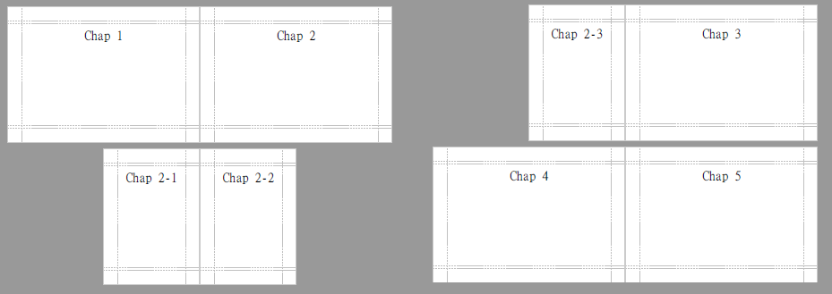

內容分節
分節控制，一般應用於輸出文件類型的檔案，可因應封面頁、目錄等部分版面配置不同的需求。另一個常見用途是組合不同報表做客制化輸出。
依文件類型特性，分節處理模式自然不同。像是 EXCEL 預設會以獨立 SHEET 輸出各節內容；CSV 預設直接接續輸出所有內容。若有其它較特別的需求，也可以自行覆寫 xxxGenerator 中的相關實作處理。
基本範例 (PDF)
下例 PDFSection 用於輸出基本頁面，產出指定大小頁面配上單一文字。
- PDFSection.java
// PDFSection is a 'PDFGenerator'. public class PDFSection extends AbstractPDFGenerator { private String text; public PDFSection(final Rectangle pageSize, final String text) { super(pageSize); this.text = text; } @Override public void generatePDFContent(final PDFDocument pdfDocument) { pdfDocument.writeText(this.text, 28, DocumentAlign.CENTER); } }
我們可以建立多個 PDFSection 實例，並組裝起來，使其依 1、2、2-1、2-2、2-3、3、4、5 的順序輸出。
組裝方式有二：
- 第一層的項目可以直接用 AbstractPDFGenerator.of( PDFGenerator... ) 產出一個空的 ROOT PDF文件包含指定內容。
- 一般專案實作中，應該要自訂空白 ROOT 文件類別，以便處理專案所需的邏輯，如檔案置放原則等等...。
第二層以後的項目可用 AbstractPDFGenerator 所定義的 addSection() method 加入。
Sample_Sections.java
@Test public void test_PDF_Section() { // 第一層項目 final PDFSection s1 = new PDFSection(PageSize.A6.rotate(), "Chap 1"); final PDFSection s2 = new PDFSection(PageSize.A6.rotate(), "Chap 2"); final PDFSection s3 = new PDFSection(PageSize.A6.rotate(), "Chap 3"); final PDFSection s4 = new PDFSection(PageSize.A6.rotate(), "Chap 4"); final PDFSection s5 = new PDFSection(PageSize.A6.rotate(), "Chap 5"); final AbstractDocumentGenerator root = AbstractPDFGenerator.of(s1, s2, s3, s4, s5); // 第二層以後的項目 s2.addSection(new PDFSection(PageSize.A7, "Chap 2-1")); s2.addSection(new PDFSection(PageSize.A7, "Chap 2-2")); s2.addSection(new PDFSection(PageSize.A7, "Chap 2-3")); // CREATE PDF super.createPDF(root); }
執行結果如下，使用分節特性，可以做出各分節頁面版型不同的效果。

Excel 分節 (多SHEET)
接著拿實作 MultiFormatReportSupport 的 GSS0010 測試。在產出 EXCEL 時，各分節會以不同 SHEET 呈現。
- Sample_Sections.java
@Test public void test_Excel_Section() { final GSS0010 s1 = new GSS0010(); final GSS0010 s2 = new GSS0010("S1"); final GSS0010 s3 = new GSS0010("S2"); final DocumentGenerator root = AbstractSampleReport.of(s1, s2, s3); super.doDocument(root, DocumentFormat.EXCEL); super.doDocument(root, DocumentFormat.PDF); }